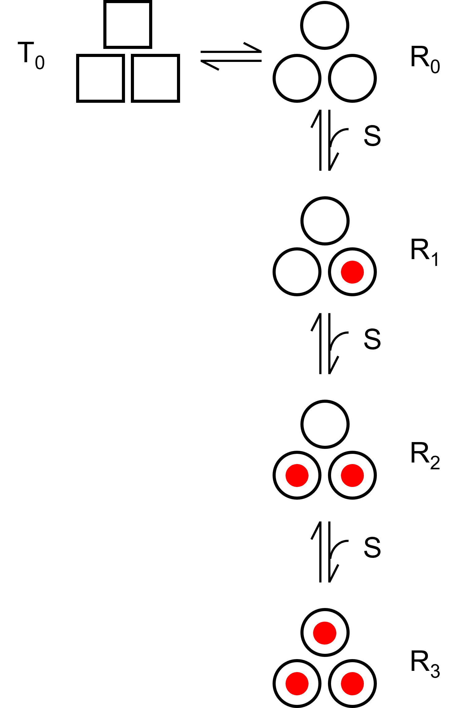
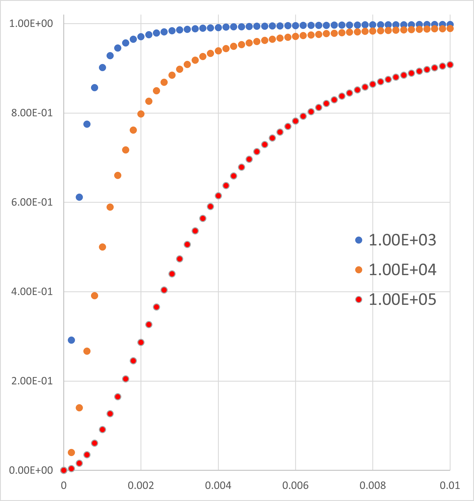

アロステリックモデル再考-04
つぎに，さて，アロステリックモデルに関して計算を解いて，確かにS字型のカーブを再現することができました．
しかし，
どこに協同性があるのだろう？
という疑問がわきました．

今までの計算は，基質Sが複数の結合サイトを持つ分子に結合・解離をするものであり，どこにも協同性，は含まれていません．
が．．．Lを変化させていみると，
\( \Large L= \frac{T_0}{R_0} \)

Lが小さい時（ここではL=1,000，青)ではS字型にはならず，一般的な二状態の平衡反応となります．
Lが大きくなると（ここでは，L=10,000，赤）ではS字型となります．
つまり，TとRという２状態が重要で，殆どがT状態（基質が結合できない状態）の場合に，アロステリック効果が出ることになります．
逆に，Rが殆どの場合には，単純な結合・解離，のモデルとなり，アロステリック効果はなくなるのでは，と思います．
ある意味での，逐次反応ですね．
”こんなことは当然でしょ！”と言われるかもしれませんが．．．この年になって，やっと理解できました．
次のページに，MWCモデルに関して，考えていきましょう．